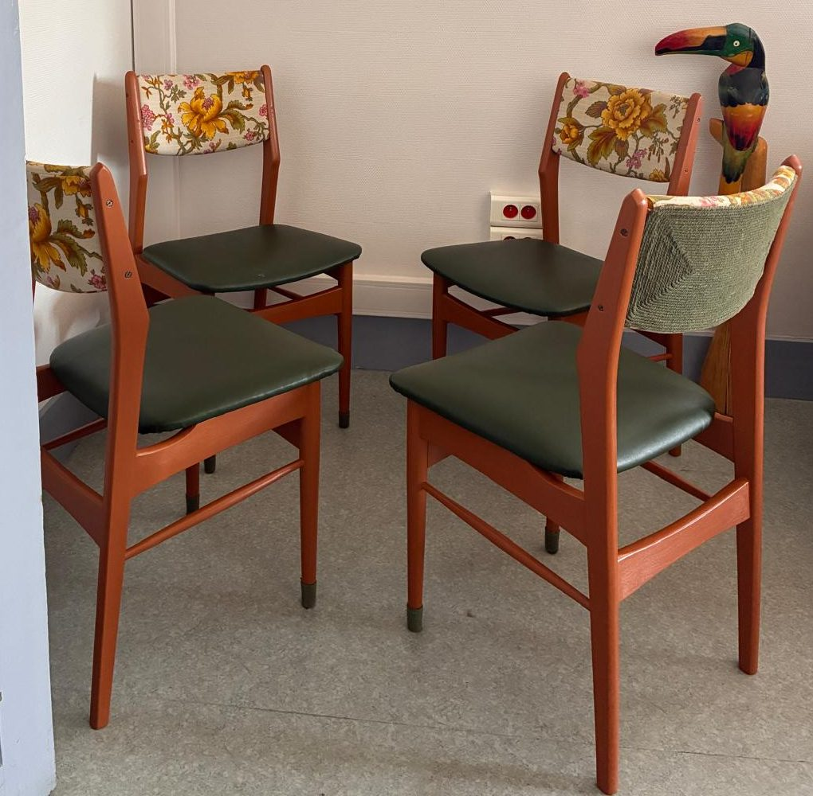

Chacun de ces meubles raconte une histoire différente.
Je m'efforce de respecter l'esprit de l'objet tout en lui apportant une touche actuelle. Donner une nouvelle vie à un meuble authentique, c'est allonger la vie d'un objet qui existe déjà, plutôt que d'en acheter un neuf.